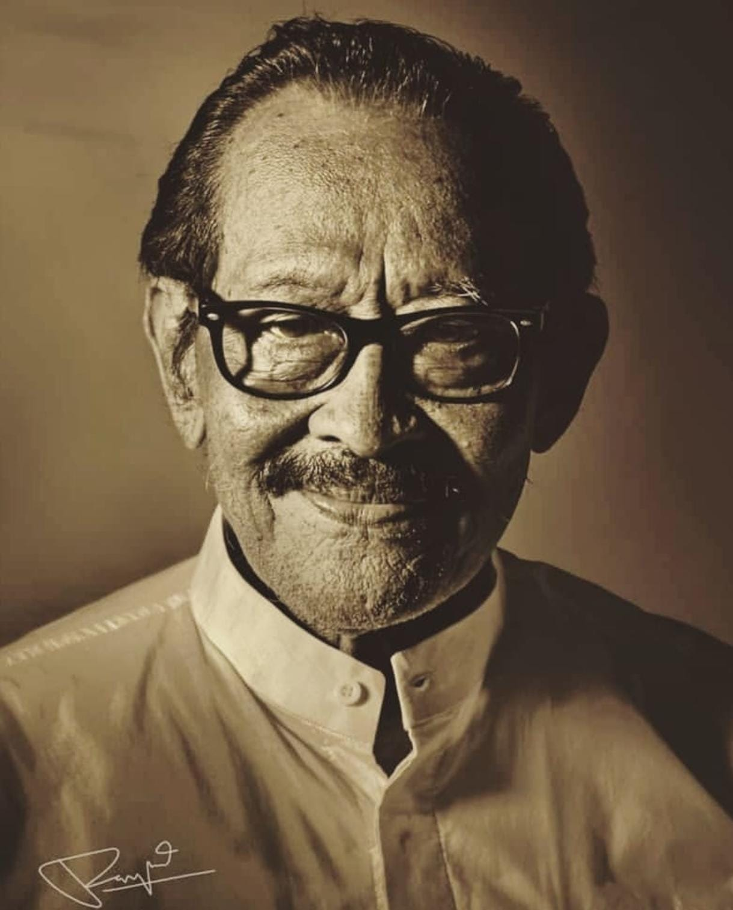

I Gusti Ngurah Oka Putra
Maestro Tradisi Omed-Omedan"Tradisi ini bukan hanya warisan, tetapi jiwa yang terus hidup dalam setiap denyut komunitas kami."
Maestro yang memiliki keturunan langsung darah dari raja yang sebelumnya berkuasa di puri banjar kaja sesetan